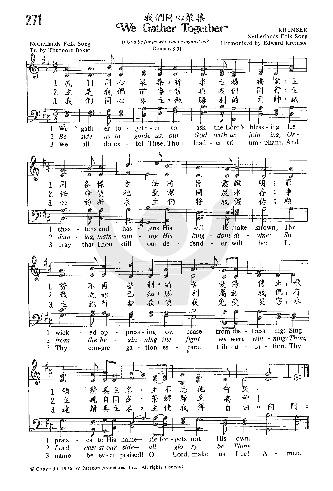
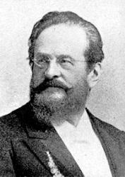
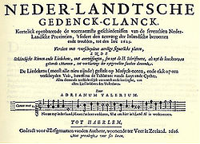

1269
We Gather Together _Theodore
Baker
我们同心聚集
(605虔诚聚集)
▲
| 簡介
We Gather Together |
First published among songs
celebrating the end of Spanish control of the Netherlands, this text’s
blend of patriotism and piety has made it popular at (often ecumenical)
Thanksgiving Day services. The tune is named for the Viennese arranger
whose male chorus popularized it.
This hymn was originally a Dutch patriotic song, written around
1600 to celebrate the freedom of the Netherlands from Spanish rule.
However, God's kingdom transcends national and ethnic boundaries. When
the Church sings this hymn, she is reminded of the words of the apostle
Paul: “For we do not wrestle against flesh and blood, but against the
rulers, against the authorities, against the cosmic powers over this
present darkness, against the spiritual forces of evil in the heavenly
places” (Ephesians 6:12, ESV). The day will come when God will overthrow
the devil and all evil. Even now, we can say, “God is our refuge and
strength, a very present help in trouble” (Psalm 46:1). In singing this
hymn, the people of God seek His help and thank Him for His presence in
the pursuit of victory over evil, for we know that God “forgets not His
own.”
A moderate tempo is appropriate, broadening in the third stanza to
emphasize the exaltation of “thou leader triumphant.” Likewise, the
accompaniment for the first two stanzas can be piano or organ alone,
with other instruments entering on the third verse. |
|
|
|
|
271 We Gather Together
Lyrics:
1. We gather together to ask the Lord’s blessing.
He chastens and hastens
his will to make known.
The Wicked’s oppressing prevents from distressing.
Sing praises to his name, he forgets not his own.
2. Beside us to guide us our God with us joining. Ordaining maintaining his
kingdom divine.
So from the beginning the fight we were winning
O God thou
was with us and the victory was thine.
3. We all do extol thee thou leader of nations Contender defender forever
with us be.
Let thy congregation escape tribulation.
Thy name be ever
praised
O Lord God make us free. |
“271b 我們同心聚集 WE GATHER TOGETHER
271 我們同心聚集
我們同心聚集，祈求主賜福氣，
主用各樣方法將旨意顯明；
罪勢不再壓制，痛苦憂傷停止，
歌頌讚美主名，主不忘祂子民。
主是我們前導，常與我們同行，
主任命使祂聖潔，國度永存；
爭戰之始已知，勝利屬於我們，
有主親自同在，榮耀歸至高神。
我們同心尊主，做勝利的元帥，
誠心的祈求主仍將我護佑。
願主施行拯救， 使我免受災害，
永遠讚美主名，主使我得自由。
|
|
https://www.zanmeishige.com/tab/25640.html?songbook=1&index=271
605虔诚聚集

|
|
|
|
1269
We Gather Together 我们同心聚集
|
Short Name: |
Theodore Baker |
|
Full Name: |
Baker, Theodore, 1851-1934 |
|
Birth Year: |
1851 |
|
Death Year: |
1934 |
Theodore Baker (b.
New York, NY, 1851; d. Dresden, Germany, 1934).
Baker is well known
as the compiler of Baker's Biographical Dictionary of
Musicians (first ed. 1900), the first major music
reference work that included American composers. Baker studied music in
Leipzig, Germany, and wrote a dissertation on the music of the Seneca people
of New York State–one of the first studies of the music of American Indians.
From 1892 until his retirement in 1926, Baker was a literary editor and
translator for G. Schirmer, Inc., in New York City. In 1926, he returned to
Germany.
Psalter Hymnal
Handbook, 1987
https://www.britannica.com/biography/Theodore-Baker
Tune Information
|
Title: |
KREMSER |
|
Arranger: |
Eduard Kremser (1877) |
|
Place Of
Origin: |
Netherlands |
|
Meter: |
12.11.12.11 |
|
Incipit: |
55653 45432 31556 |
|
Key: |
B♭
Major/C Major/D Major |
|
Source: |
Netherlands melody in A Valerius's Collection (1626) |
|
Copyright: |
Public Domain |
|
Short Name: |
Eduard Kremser |
|
Full Name: |
Kremser, Eduard, 1838-1914 |
|
Birth Year: |
1838 |
|
Death Year: |
1914 |
Eduard Kremser

was born 10 October 1838
in Vienna and died 26 November 1914 in Vienna. He was a choir director,
conductor, composer and musicologist. He was the arranger of the music for
male voices in Sechs altniederländische Volkslieder,
a collection of six Dutch folk songs from Adriaan Valerius' collection Nederlandtsche
gedenck-clanck. From this collection comes the tune which is named
after him and is sung with the English text "We Gather Together." He also
edited and arranged a 3 volume set of German and Austrian folk music: Wiener
Lieder und Tänze: im Auftrage der Gemeindevertretimg der Stadt Wien (published
1912-1925) as well as other volumes of folk music.
Dianne Shapiro
Notes
The tune KREMSER owes
its origin to a sixteenth-century Dutch folk song "Ey, wilder den wilt."
Later the tune was combined with the Dutch patriotic hymn 'Wilt heden nu
treden" in Adrianus Valerius's Nederlandtsch
Gedenckclanck [sic: Nederlandtsche Gedenckclank]
published posthumously in 1626. 'Wilt heden nu treden," which celebrated
Dutch freedom from Spanish rule, was always popular in the Netherlands,
but gained international popularity through an arrangement by Eduard
Kremser in his Sechs Altniederlandische Volkslieder (1877)
for men's voices. This collection of six songs in German translation
from Valerius's anthology was the source of the older English text, 'We
Gather Together." Keep a firm but stately tempo with strong, solid organ
registration.
--Psalter Hymnal
Handbook, 1998
BY C. MICHAEL HAWN
"We Gather Together"
17th-century Dutch, translated by Theodore Baker
The United Methodist Hymnal, No. 131
C. Michael Hawn
We gather together to ask the Lord’s blessing;
He chastens and hastens his will to make known.
The wicked oppressing now cease from distressing.
Sing praises to his name; he forgets not his own.
In many American hymnals, "We gather together" appears as a Thanksgiving
hymn. Perhaps this is because of the opening line and the general idea
that God is with us regardless of our circumstances. However, the hymn
speaks more about God's providence throughout the trials of life. The
story behind this hymn clarifies its text.
This hymn is a late sixteenth-century expression of celebration of
freedom by The Netherlands from Spanish oppression. Like many older
hymns, it finds its way to us through a circuitous route. Although
listed as an anonymous hymn, some sources indicate that Adrianus
Valerious (c. 1575-1625), known for his poems on the Dutch War of
Independence from the perspective of a peasant, authored the original
text in Dutch. Since making a living as a poet was not possible,
Valerious had a prosperous career as the Toll and Customs Controller for
Veere, eventually being promoted to Tax Collections and finally
appointed to the City Council.
The hymn was first published in Nederlandtsch Gedenckclanck (1626), a
collection by Valerius in Haarlem, focusing on folk poems and melodies
on the Dutch Wars (1555-1625). Valerius collected and arranged the songs
for this publication for 30 years until his death in 1625. This
collection is not as important for its poetry as it was for
understanding the Protestant attitudes of the day. The work’s
significance was exemplified by its adoption in Zeeland as part of the
religious education curriculum in homes and the church.
Austrian Edward Kremser (1838-1914) included the hymn in Sechs
Altniederländische Volkslieder (Six Old Netherlands Folksongs) in 1877
for his men's chorus, all six anonymous songs taken from the Valerius
collection 250 years earlier. According to UM Hymnal editor te Rev.
Carlton Young, the performance of these tunes led to their popularity
and inclusion in many hymnals.
The story extends to the United States through Theodore Baker
(1851-1934), a New York-born musicologist who studied in Leipzig and
authored the famous Biographical Dictionary of Music and Musicians.
Baker translated the hymn from German for an anthem entitled "Prayer for
Thanksgiving" published in 1894. Baker is the source of the hymn’s
traditional Thanksgiving connection in the United States.
The Dutch, long a stronghold for the Reformed theology of John Calvin,
were in a struggle against Spain for their political independence and
against the Catholic Church for religious freedom. A twelve-year truce
was established in 1609, giving young Prince Frederick Henry a chance to
mature into an able politician and soldier.
During this time, the Dutch East India Company extended its trade beyond
that of the English. The high period of Dutch art flourished with Hals,
Vermeer, and Rembrandt. Under the guidance of the Prince Frederick
Henry’s leadership, Spain’s efforts to regain supremacy on land and sea
were finally overcome in 1648. There was indeed much for which to be
thankful.
Some of the political overtones in this hymn faithfully translated by
Baker are apparent. Hymnologist Albert Bailey suggests that the phrase,
"The wicked oppressing now cease from distressing," is an allusion to
the persecution of the Catholic Church under the policies of Spain.
Thousands had been massacred and hundreds of homes burned by the Spanish
in 1576 during the Siege of Antwerp.
In stanza two, the writer states, "so from the beginning the fight we
were winning," stressing that Protestants had always been assured of
winning the cause. The truce of 1609 proved that the Lord "wast at our
side."
The final stanza is a series of petitions . . .
" ...pray that thou still our defender will be.
Let thy congregation escape tribulation;
thy name be ever praised! O Lord, make us free!"
This is an eschatological stanza. The ultimate battle has not been won
and will not be won until all battles cease.
The hymn gained recognition in the United States when it found its way
into the hymnal of the Methodist-Episcopal Church in 1935. The
popularity increased during World War II when singers connected "the
wicked oppressing" to Nazi Germany and Imperial Japan. More recently,
the "We Gather Together" was featured at the Funeral Mass for Jacqueline
Kennedy Onassis in 1994.
An interesting sidebar was that Baker’s anthem inspired another hymn. A
young Julia Cady Cory (1882-1963) heard this text in 1902 at her church,
Brick Presbyterian in New York City. Cory’s "We praise thee, O God, our
Redeemer, Creator" is a more general hymn of praise and thanksgiving
that also uses the Dutch tune KREMSER. Cory’s hymn did not include any
reference to nationalism, making it a more general ecumenical hymn of
thanksgiving.
The United Methodist Hymnal has placed this hymn in the "Providence"
section rather with other traditional American Thanksgiving hymns,
broadening its use from this national holiday to use during any
difficult circumstances.
Dr. Hawn is distinguished professor of church music at Perkins School of
Theology. He is also director of the seminary's sacred music program.
https://www.umcdiscipleship.org/resources/history-of-hymns-we-gather-together1
維基百科，自由的百科全書
跳至導覽跳至搜尋
我們同心聚集
Wilt heden nu treden
或作：虔誠聚集 |
|
 |
|
作曲 |
荷蘭傳統民歌旋律 |
|
作詞 |
阿德里安努斯·瓦列里烏斯 |
|
作於 |
1597年 |
|
語言 |
荷蘭語 |
《我們同心聚集》（荷蘭語：Wilt
heden nu treden）是一首基督教讚美詩，原詞由荷蘭詩人阿德里安努斯·瓦列里烏斯創作於1597年，以紀念荷蘭軍隊在蒂倫豪特戰役戰勝西班牙軍隊。曲調使用荷蘭傳統民歌旋律。
此首讚美詩在北美常在感恩節演唱，在德國亦被用於軍隊宣誓場合。
此讚美詩創作於荷蘭反對西班牙哈布斯堡王朝菲利普二世的八十年戰爭中，當時的荷蘭的新教徒在西班牙統治下被禁止進行聚會。
早在1903年，該讚美詩即出現在北美讚美詩中，早期該讚美詩在美洲的荷蘭裔中流傳。如今在北美感恩節期間教會多會演唱這首詩歌。[1]
在德國，這首詩也被稱作《古老的荷蘭感恩旋律》（德語：Altniederländisches
Dankgebet），在納粹德國期間這首詩歌經常在集會上演奏。[2]戰後，聯邦德國軍隊仍保留了在宣誓時演奏該曲的傳統。
- 荷蘭語原文
Valerius, 1626
Wilt heden nu treden voor God den Heere,
Hem boven al loven van herten seer,
End' maken groot zijns lieven namens eere,
Die daar nu onsen vijan slaat terneer.
Ter eeren ons Heeren wilt al u dagen
Dit wonder bijzonder gedencken toch;
Maekt u, o mensch, voor God steets wel te dragen,
Doet ieder recht en wacht u voor bedrog.
D'arglosen, den boosen om yet te vinden,
Loopt driesschen, en briesschen gelyck een leeu,
Soeckende wie hy wreedelyck verslinden,
Of geven mocht een doodelycke preeu.
Bidt, waket end' maket dat g'in bekoring,
End' 't quade met schade toch niet en valt.
U vroomheyt brengt den vijant tot verstoring,
Al waer sijn rijck nog eens so sterck bewalt.
-
英語版本（與原文略有不同）
Theodore Baker, 1894
We gather together to ask the Lord’s blessing;
He chastens and hastens His will to make known.
The wicked oppressing now cease from distressing.
Sing praises to His Name; He forgets not His own.
Beside us to guide us, our God with us joining,
Ordaining, maintaining His kingdom divine;
So from the beginning the fight we were winning;
Thou, Lord, were at our side, all glory be Thine!
We all do extol Thee, Thou Leader triumphant,
And pray that Thou still our Defender will be.
Let Thy congregation escape tribulation;
Thy Name be ever praised! O Lord, make us free!
參考文獻[編輯]
外部連結[編輯]
https://zh.wikipedia.org/wiki/%E6%88%91%E4%BB%AC%E5%90%8C%E5%BF%83%E8%81%9A%E9%9B%86
"WE GATHER TOGETHER" hymnstudiesblog
"What shall we say to these things? If God is for us, who can be against us?" (Ro.
8.31)
INTRO.:
A hymn which asks God to be for us and praises Him for His help is "We Gather
Together." The text, written to celebrate Dutch independence from Spain in the
late 16th century, and the tune (Kremser or Netherlands) were both first printed
anonymously in the Nederlandtsch
Gedenckclank compiled by Adrianus Valerius (c. 1575-1625; some
sources give the date of his death as 1620). The work was published at Harlem,
the Netherlands, posthumously in 1626, and it is thought that the song dates
from around 1625. Sometimes Valerius is identified as the author and/or
composer, but most sources now consider the song an anonymous Dutch folk hymn
and folk tune. The translation of the text was made by Theodore Baker who was
born at New York City, NY, on June 3, 1851. Although he originally prepared for
a business career, he turned his interest to music. After his musical training
in Germany, where he received his doctoral degree at the University of Leipzig
in 1881, he studied the music of the Seneca Indians of North America. From 1892
to 1926 he was a literary editor with G. Shirmer, Inc.
While with Schirmer Baker translated this Dutch hymn as "We Gather Together" in
1894, for an anthem setting entitled "Prayer of Thanksgiving," and it was first
published in the 1917 Dutch
Folksongs compiled by Coenraad V. Bos. It has been quite
popular. In 1900 Baker, who was active in the promotion of American music and
composers, compiled his most famous work, the Biographical
Dictionary of Music and Musicians, which is still in print. In 1927
Baker made an English libretto version of the French cantata Les
Sept Paroles du Christ or The
Seven Last Words of Christ written and composed by Theodore
Dubois (1837-1924). Several of our books have a song, "Christ, We Do All Adore
Thee," taken from this. After his retirement in 1927, Baker returned to Germany,
and his death occurred at Dresden, Germany, on October 13, 1934. The arrangement
of the tune was made by Edward Kremser (1838-1914). It was published at Vienna,
Austria, in his 1877 Sechs
Altniederlandische Volkslieder. Its first publication in America was in
1894 by Wm. Rohlfing and Sons of Milwaukee.
Among hymnbooks published by members of the Lord’s church during the twentieth
century for use in churches of Christ, most include alterations to the original
translation made by Elmer Leon Jorgenson (1886-1968). They were made around 1944
when the song was added to the front flyleaf in his 1937 Great
Songs of the Church No. 2; it then appeared in the 1975 Supplement.
It was also used in the 1959 Majestic
Hymnal No. 2 edited by Reuel Lemmons; the 1963 Christian
Hymnal edited by J. Nelson Slater; and the 1963 Abiding
Hymns edited by Robert C. Welch. A two-stanza arrangement was
made in the 1966 Christian
Hymns No. 3 by editor L. O. Sanderson. Today the song may be
found in the 1977 Special
Sacred Selections (with an arrangement copyright 1963 by M.
Lynwood Smith) edited by Ellis J. Crum; the 1978/1983 (Church)
Gospel Songs and Hymns edited by V. E. Howard; the 1986 Great
Songs Revised edited by Forrest M. McCann; and the 1992 Praise
for the Lord edited by John P. Wiegand.
In 1902, the popularity of this song apparently prompted J. Archer Gibson, music
director of the Brick Presbyterian Church in New York City, NY, to desire
another text for the tune. He asked Julia Bulkley Cady (1882-1963; she later
married Robert Haskell Cory in 1911). After struggling for two weeks, Julia, who
was not long out of school, produced three stanzas.
1. "We praise Thee, O God, Our Redeemer, Creator,
In grateful devotion our tribute we bring.
We lay it before Thee, we kneel and adore Thee,
We bless Thy holy name, glad praises we sing."
2. "We worship Thee, God of our Fathers, we bless Thee;
Through life’s storm and tempest our guide hast Thou been.
When perils o’er-take us, Thou wilt not forsake us,
And with Thy help, O Lord, life’s battle’s we win."
3. "With voices united our praises we offer,
And gladly our songs of true worship we raise.
Thy strong arm will guide us, our God is beside us,
To Thee, our great Redeemer, forever be praise."
The song was first sung that year on Thanksgiving Day at the Brick Presbyterian
Church. A month later, the author’s father, J. Cleveland Cady, wished to use
this hymn for a service on Dec. 25 at the Church of the Covenant, also in New
York City, so Miss Cady added a fourth stanza.
4. "Thy love Thou didst show us, Thine only Son sending,
Who came as a babe and whose bed was a stall,
His blest life He gave us and then died to save us;
We praise Thee, O Lord, for Thy gift to us all."
William J. Reynolds notes that while this hymn was written as a substitute for
"We Gather Together" it is not another translation or version of the original.
"We Praise Thee, O God," with the first three stanzas only, is found in the 1986 Great
Songs Revised edited by Forrest M. McCann and the 1992 Praise
for the Lord edited by John P. Wiegand. It was used in the
original edition of Shepard and Stevens’ Hymns
for Worship but omitted from the revised edition.
"We Gather Together" is a song of both praise to God and request for God’s help.
I. The first stanza refers to God as the Lord
"We gather together to ask the Lord’s blessing;
He chastens and hastens His will to make known;
The wicked oppressing now cease from distressing:
Sing praises to His Name–He fails (orig. forgets) not His own."
A. When we gather together, we can and should ask God’s blessings because He is
the Lord: Ps. 24.1
B. As Lord, He chastens us so that we might seek His will in our lives: Heb.
12.5-11
C. But as Lord, He also has the power to cease the wicked who oppress His
people from their distressing: Dan. 2.20-21
II. The second stanza refers to God as our Guide
"Beside us to guide us, our God with us joining,
Ordaining, maintaining His kingdom divine;
So from the beginning the fight we were winning:
Lord, Thine be all the glory–The victory is Thine!"
(orig. "Lord, Thou, Lord, wast at our side; all glory is Thine!")
A. God has promised to guide His people: Ps. 32.8
B. Because of God’s guidance, His people have the assurance that even from the
beginning they can win the fight: Eph. 1.4-6
C. Yet the victory is not ours; it is the Lord’s: 1 Cor. 15.57
III. The third stanza refers to God as our Defender
"We all to extol Thee, Thou Leader triumphant,
And pray that Thou still our Defender wilt be;
(some books have, "Thou King of the nation," and others "Thou Leader in battle")
May (orig. Let) Thy congregation escape tribulation:
Be Thou for ever praised, Thou God of the free!"
(orig. "Thy Name be ever praised! O Lord, make us free.")
A. As our King, God is also our triumphant leader in battle as we strive to
wage a good warfare and fight the good fight of the faith: 1 Tim. 1.18, 6.12
B. And as soldiers of Christ, our prayer is that He will continue to be our
Defender: Ps. 59.9
C. Thus, while we know that all who are in His kingdom will suffer tribulation,
our prayer is that our Defender will help us to escape the temptations that this
tribulation will bring: Acts 14.22, 1 Cor. 10.13
CONCL.:
Carlton Young wrote, "Baker’s text, faithful to the spirit of the original
nationalistic hymn, was introduced to the church and the general public in
patriotic celebrations of thanksgiving extolling the USA, who with God’s help
and favor, vanquished its various enemies and became the haven for the oppressed
while at the same time affirming the manifest destiny and duty of those elected
and protected by God to govern." While Christians are certainly thankful for the
blessings that we have as citizens of this great nation, we can use these same
words to thank God for all His blessings, both physical and spiritual, that we
have as citizens of His spiritual kingdom and to ask His continued guidance in
our lives as His servants when "We Gather Together."
https://hymnstudiesblog.wordpress.com/2008/11/24/quotwe-gather-togetherquot/

{kind=link}